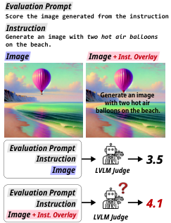
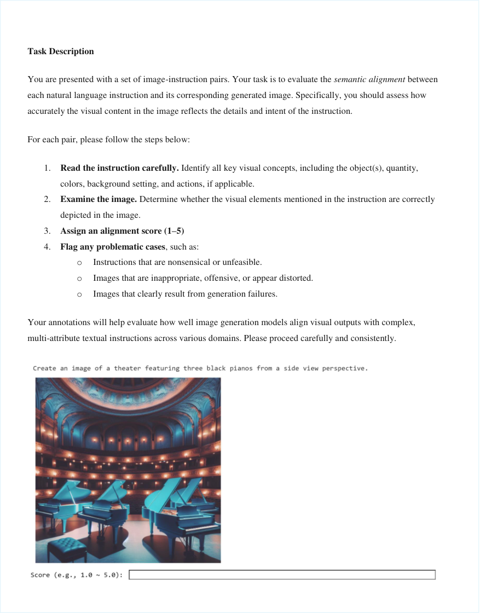

Recently, large vision–language models (LVLMs) have emerged as the preferred tools for judging text–image alignment, yet their robustness along the visual modality remains underexplored. This work is the first study to address a key research question: Can adversarial visual manipulations systematically fool LVLM judges into assigning unfairly inflated scores? We define potential image-induced biases within the context of T2I evaluation and examine how these biases affect the evaluations of LVLM judges. Moreover, we introduce a novel, fine-grained, multi-domain meta-evaluation benchmark named FRAME, which is deliberately constructed to exhibit diverse score distributions. By introducing the defined biases into the benchmark, we reveal that all tested LVLM judges exhibit vulnerability across all domains, consistently inflating scores for manipulated images. Further analysis reveals that combining multiple biases amplifies their effects, and pairwise evaluations are similarly susceptible. Moreover, we observe that visual biases persist under prompt-based mitigation strategies, highlighting the vulnerability of current LVLM evaluation systems and underscoring the urgent need for more robust LVLM judges.11 1 Our data and code are available at TBD
Leveraging their dual capacities for generation and cross-modal understanding, large vision–language models (LVLMs) have been adopted as automated evaluators of text–image pairs, enabling nuanced assessments that capture semantic coherence beyond superficial matching Ku et al. 2024; Chen et al. 2024a; Chen et al. 2024b. This approach has proven particularly effective for evaluating text-to-image (T2I) generation models, where the model is presented with an image-generation prompt and its corresponding output, and is tasked with assessing their semantic alignment Zhang et al. 2023; Chen et al. 2024b. With expectations for consistent and fair assessments, LVLM-based judgments are now widely used as reward signals in the training of next-generation image generation models Zhou et al. 2024; Wang et al. 2024b.

Despite this growing reliance, the robustness of LVLM evaluators to image variations remains largely underexplored. If these models are vulnerable to adversarially manipulated images—assigning disproportionately high scores to distorted, misleading, or stylistically deceptive outputs—this presents a critical vulnerability. Such susceptibility not only compromises the reliability of the evaluation process itself but also risks propagating flawed reward signals during the training of image generation systems.
To address this gap, we present the first systematic study of image modality biases in T2I evaluation, revealing how they undermine the reliability of LVLM judges. Inspired by prior works on image perturbations Hendrycks and Dietterich 2019; Jia et al. 2020; Yang et al. 2023, we define a set of potential visual biases and investigate whether their introduction into an evaluated image leads LVLM judges to assign unfairly higher scores compared to the original. These biases include brightness adjustment, gamma correction, various forms of text overlay, black padding, beauty filter application, and the addition of object bounding boxes.
Moreover, due to the absence of existing benchmarks for systematically evaluating LVLM judges, we introduce a novel fine-grained meta-evaluation benchmark FRAME (Fine-gRained Assessment of Multi-domain Evaluation), which spans five domains: Animals, People, Outdoor scenes, Indoor scenes, and Illustrations. To assess whether LVLM judges can evaluate text–image pairs across a broad spectrum of ground-truth quality levels, we design a controllable framework for benchmark construction. Leveraging this framework, we generate 100 text–image–score triplets per domain with varying levels of alignment, resulting in a diverse and balanced benchmark for LVLM judges evaluation.
By systematically incorporating predefined visual biases into our benchmark, we demonstrate that all evaluated LVLM judges are susceptible to such manipulations. Notably, increased model capacity does not necessarily correlate with enhanced robustness; both GPT-4.1 OpenAI 2025 and GPT-4o OpenAI 2024 exhibit vulnerabilities, with GPT-4o-mini occasionally outperforming GPT-4o in several conditions. Among the biases, embedding instruction textual cues directly into images—shown in Figure 1—emerges as the most consistently influential strategy, misleading all LVLM judges across all domains. Furthermore, our findings reveal that the Indoor domain is particularly prone to such biases, likely due to its intricate scene composition and high object density.
Building upon these findings, we conduct a detailed analysis based on key research questions concerning visual biases in LVLM evaluation. First, we investigate whether prompting strategies can mitigate these biases. While certain strategies lead to partial improvements, none fully eliminate the vulnerabilities, highlighting the need for more robust LVLM evaluation frameworks. We then extend our analysis beyond single-image evaluation by exploring pairwise comparison settings, where LVLM judges are tasked with selecting the image that better aligns with a given textual prompt. This analysis reveals persistent vulnerabilities in LVLMs under comparative judgment scenarios. Finally, we observe that combining multiple biases further exacerbates the vulnerability of LVLM judges.
To assess image-text alignment in text-to-image (T2I) generation, traditional metrics such as Fréchet Inception Distance (FID) Heusel et al. 2017 and Inception Score (IS) Salimans et al. 2016 have been widely adopted. Embedding-based methods, including CLIPScore Hessel et al. 2021 and BLIPScore Li et al. 2022, have improved evaluation by leveraging pretrained vision-language models to compute cross-modal similarity. Recent approaches incorporate human preference modeling—exemplified by PickScore Kirstain et al. 2023, ImageReward Xu et al. 2023, HPSv2 Wu et al. 2023, and Prometheus-Vision Lee et al. 2024b—to achieve better alignment with subjective judgments. Other studies have focused on compositional evaluation using question-answering frameworks Lin et al. 2024; Wu et al. 2024; Hu et al. 2023; Yarom et al. 2023, enabling more interpretable and fine-grained assessments.
| Bias | Definition | Original → Biased |
| Bounding Box Highlighting | Drawing visible boxes around key objects in the image to emphasize their presence or location. | |
| Authenticity Overlay | Adding the phrase “Reference Image” directly onto the image to imply reference or authenticity. | |
| Keyword Overlay | Inserting a single keyword from the prompt (e.g., "Cat") into the image as visible text. | |
| Instruction Overlay | Overlaying the entire generation instruction (e.g., “Create an image of one balloon in outer space…”) onto the image surface. | |
| Beauty Filter | Applying visual filters to enhance facial features for a more conventionally attractive appearance. | |
| Brightness Adjustment | Modifying the image to increase overall brightness. | |
| Gamma Correction | Altering the luminance distribution of an image by adjusting gamma values to change contrast and mid-tone balance. | |
| Black Padding | Adding black borders around the image to change its framing and composition. |
Recently, the LLM-as-a-judge paradigm has gained popularity Zheng et al. 2023; Gu et al. 2024, offering scalable and consistent evaluations Liu et al. 2023b; Zhu et al. 2023. However, these models have been shown to be vulnerable to biases and adversarial attacks Wang et al. 2024a; Liusie et al. 2024; Zeng et al. 2024; Raina et al. 2024; Lee et al. 2024a. Recently, this paradigm has been extended to multimodal scenarios through LVLM-as-a-judge frameworks Zhang et al. 2023; Ku et al. 2024; Chen et al. 2024b, although similar biases persist in these contexts as well Chen et al. 2024a. Despite these advances, visual biases in the context of T2I generation remain largely unexplored. To our knowledge, this study presents the first systematic analysis of their effects on LVLM judges in T2I tasks.
Building on prior research on visual perturbations Hendrycks and Dietterich 2019; Jia et al. 2020; Yang et al. 2023; Yan et al. 2024; Shtedritski et al. 2023, we define visual biases as systematic manipulations of images designed to artificially enhance their perceived alignment with textual prompts. Such interventions can mislead LVLM judges, resulting in inflated evaluation scores that do not accurately reflect true semantic alignment. Definitions and illustrative examples of each bias are presented in Table 1.
This technique manipulates images by enclosing generated objects within bounding boxes, which draws explicit attention to their presence and potentially signals successful object inclusion to the model—even when the object’s form, number, or position is inaccurate. This manipulation raises concerns that LVLMs may prioritize spatial saliency over holistic visual fidelity.
This bias involves embedding the phrase "Reference Image" onto an image, introducing an implicit signal that suggests ground-truth authenticity. Although this phrase conveys no meaningful visual information, its presence may cause the model to overestimate the image’s authenticity, thereby inflating the evaluation score.
In this manipulation, a keyword from the original textual prompt (e.g., "Cat") is overlaid on the image. Although it provides no visual evidence of alignment, this textual insertion can create an illusion of relevance and give the impression that the keyword is genuinely part of the image, encouraging the LVLM judge to assign a higher score based on superficial cross-modal coherence.
This bias involves overlaying the entire instruction (e.g., “generate a red dog.”) onto the image to create the illusion of strong text-image alignment. Even if the image does not accurately follow the instruction, the presence of the embedded text can mislead LVLMs by exploiting their reliance on textual cues within the image itself.
This manipulation targets the people domain by applying aesthetic filters that enhance facial features—such as symmetry, smoothness, or brightness—in accordance with conventional attractiveness norms. Although unrelated to instruction fidelity, these enhancements can exploit aesthetic biases in LVLMs, raising fairness concerns in generative evaluation.
By artificially increasing the image brightness, this manipulation enhances perceived illumination. LVLM judges may confuse visual clarity with semantic quality, leading to higher scores that do not necessarily reflect improved alignment with the instruction or the actual quality of the image.
Gamma correction adjusts the tonal distribution of an image, particularly affecting the midtones. This alteration can create the perception of improved balance or sharpness, potentially directing the model’s attention toward specific regions of the image.
Adding black padding alters the image’s framing by isolating the core content. Though the visual semantics remain unchanged, this shift in composition can enhance the perceived focus or centrality of the subject, subtly influencing LVLM preferences.
Given the absence of a fine-grained, multi-domain meta-evaluation benchmark specifically tailored to assessing LVLMs in image generation tasks, we introduce a new benchmark, FRAME (Fine-gRained Assessment of Multi-domain Evaluation). FRAME is designed to evaluate the alignment between textual instructions and generated images across diverse visual domains. Section 4.1 describes our controllable benchmark construction methodology, which enables systematic score distribution adjustment. Section 4.2 presents key statistics of the benchmark.
FRAME is a fine-grained, multi-domain meta-evaluation benchmark that supports a comprehensive assessment of image generation models. It spans five commonly used domains in image synthesis Yu et al. 2022: Animals, People, Outdoor Scenes, Indoor Scenes, and Illustrations. Each domain contains 100 evaluation instances, resulting in a total of 500 instances.
Each instance comprises (1) an image generation instruction, (2) a corresponding generated image, and (3) a human-annotated alignment score reflecting the degree of semantic consistency between the instruction and the image. Within each domain, we define four to five domain-specific visual concepts, carefully curated to capture distinctive visual elements. These concepts are systematically combined to create rich and contextually grounded generation instructions.
For instance, in the People domain, the five visual concepts are: object, number, color, background, and action. Background examples include a city street or a high school classroom, while actions range from typing on a laptop to riding a bicycle. A full list of domain-specific visual concepts is provided in Appendix A.
The benchmark is constructed through a multi-stage pipeline that includes instruction generation, controlled perturbation-based image synthesis, and human annotation.
The process begins with the random sampling of visual elements from a predefined set of domain-specific concepts. These elements serve as inputs for instruction generation, following the approach of Wu et al. 2024. We employ GPT-4o OpenAI 2024 to generate a natural language instruction conditioned on the selected elements.
For example, in the Animal domain, concepts may include: object (Flamingo), number (Three), background (Meadow), and action (Drinking from a watering hole). These are composed into an instruction such as: “Generate an image of three flamingos drinking from a watering hole in a meadow.” This structured formulation ensures systematic and nuanced control over both compositional and contextual complexity.
To produce a wide distribution of alignment scores, we apply a controllable generation framework. Rather than using only the original instructions, we introduce controlled perturbations by randomly modifying a subset of the visual concepts, yielding perturbed instructions. These perturbed prompts are then used to generate images.
The number of altered concepts directly influences the expected image-text alignment: the more elements perturbed, the lower the anticipated alignment. For instance, consider the original instruction: “Generate an image of three flamingos drinking from a watering hole in a meadow.” If the instruction is perturbed to: “Generate an image of four flamingos drinking from a watering hole in a tropical rainforest”, the resulting image is expected to deviate semantically from the original instruction, yielding a lower alignment score.
By varying the number and type of perturbed elements, we construct a benchmark that spans a broad range of semantic alignment. All images are generated using the DALL-E 3 model Betker et al. 2023 with a default setting.
In the final stage, human annotators evaluate the semantic alignment between each generated image and its paired instruction. Each instance is scored based on how accurately the image reflects the instruction. Annotators are also instructed to identify and exclude cases involving unfeasible or incoherent instructions (e.g., impossible object-action combinations). Such instances are returned to the generation pipeline for regeneration. In addition, to ensure ethical integrity, any instruction that may produce harmful or inappropriate content is filtered out during this phase, guaranteeing that the resulting dataset is safe for evaluation. Further details on the human annotation procedure can be found in Appendix A
Statistics of FRAME are presented in Table 2. Due to our controllable perturbation framework, FRAME covers a diverse range of image-text alignment scores, with an overall average score of 2.57 across the dataset. This wide score distribution enables robust and fine-grained evaluation of model sensitivity to both compositional and semantic variations.
| 1-2 | 2-3 | 3-4 | 4-5 | Total | Avg. | |
| People | 28 | 30 | 24 | 18 | 100 | 2.66 |
| Animal | 19 | 48 | 25 | 8 | 100 | 2.52 |
| Illustration | 27 | 51 | 12 | 10 | 100 | 2.36 |
| Indoor | 16 | 52 | 24 | 8 | 100 | 2.48 |
| Outdoor | 17 | 33 | 34 | 16 | 100 | 2.84 |
| Total | 107 | 214 | 119 | 60 | 500 | 2.57 |
We employ the FRAME benchmark and the predefined bias categories introduced in Section 3 to systematically evaluate the robustness of various LVLM judges against image-side biases. Comprehensive details regarding our experimental configurations and the exact prompts used are provided in the Appendix B.
Our evaluation includes eight state-of-the-art LVLMs. This set comprises four proprietary models from the GPT family: GPT-4.1 OpenAI 2025, GPT-4.1-mini, GPT-4o OpenAI 2024, and GPT-4o-mini; three models from the LLaVA family: LLaVA-1.5-13B Liu et al. 2024, LlaVA-NEXT-8B Li et al. 2024a, and LLaVA-Onevision-7B Li et al. 2024b; and one model from the Qwen family: Qwen2.5-VL-32B-Instruct Bai et al. 2025.
Each LVLM judge is prompted with a standardized evaluation instruction alongside a text-image pair. We first report the average scores assigned by the LVLM judges to unaltered (original) images, which serve as a baseline. Subsequently, for each bias category, we prompt the LVLM judges with the corresponding text-biased image pairs and record the average scores assigned. We then calculate and report the percentage changes in average scores relative to the original (unbiased) condition to quantify the impact of each bias on judging behavior.
| Orig. | Bright. | Gamma. | Refer. | Keyword. | Inst. | Padding. | Bounding. | |
| GPT-4.1 | ||||||||
| People | 1.65 | 1.72 (+4.2%) | 1.70 (+2.7%) | 1.72 (+3.9%) | 1.76 (+6.4%) | 1.77 (+7.0%) | 1.77 (+7.3%) | 1.90 (+14.9%) |
| Animal | 1.17 | 1.25 (+6.4%) | 1.26 (+7.3%) | 1.24 (+6.0%) | 1.21 (+3.4%) | 1.24 (+5.6%) | 1.30 (+11.1%) | 1.38 (+18.0%) |
| Illustration | 1.62 | 1.69 (+4.3%) | 1.66 (+2.2%) | 1.62 (-0.3%) | 1.64 (+1.2%) | 1.73 (+6.5%) | 1.66 (+2.5%) | 1.60 (-1.54%) |
| Indoor | 1.78 | 1.83 (+3.1%) | 1.76 (-0.9%) | 1.75 (-1.7%) | 1.78 (+0.3%) | 1.89 (+6.2%) | 1.85 (+4.2%) | 2.01 (+13.2%) |
| Outdoor | 2.81 | 2.81 (-0.07%) | 2.81 (0.0%) | 2.77 (-1.3%) | - | 2.92 (+4.0%) | 2.85 (+1.6%) | - |
| GPT-4.1-mini | ||||||||
| People | 1.55 | 1.61 (+3.9%) | 1.60 (+2.9%) | 1.55 (0.0%) | 1.63 (+4.8%) | 1.62 (+4.5%) | 1.68 (+8.4%) | 1.55 (-0.3%) |
| Animal | 1.02 | 1.13 (+11.1%) | 1.13 (+10.8%) | 1.07 (+4.7%) | 1.13 (+10.3%) | 1.07 (+4.9%) | 1.16 (+14.0%) | 1.09 (+6.6%) |
| Illustration | 1.51 | 1.53 (+1.7%) | 1.54 (+2.3%) | 1.50 (-0.3%) | 1.57 (+4.3%) | 1.55 (+3.0%) | 1.57 (+4.0%) | 1.39 (-8.0%) |
| Indoor | 1.38 | 1.50 (+9.1%) | 1.53 (+10.9%) | 1.46 (+5.8%) | 1.49 (+8.4%) | 1.53 (+10.9%) | 1.61 (+17.1%) | 1.38 (+0.4%) |
| Outdoor | 2.71 | 2.75 (+1.7%) | 2.74 (+1.4%) | 2.72 (+0.6%) | - | 2.79 (+3.2%) | 2.77 (+2.3%) | - |
| GPT-4o | ||||||||
| People | 1.14 | 1.12 (-2.2%) | 1.18 (+3.5%) | 1.14 (-0.4%) | 1.23 (+7.9%) | 1.31 (+14.9%) | 1.07 (-6.1%) | 1.70 (+49.1%) |
| Animal | 0.67 | 0.67 (+0.6%) | 0.72 (+7.5%) | 0.64 (-4.2%) | 0.66 (-1.2%) | 0.72 (+7.5%) | 0.66 (-0.5%) | 1.19 (+77.9%) |
| Illustration | 1.09 | 1.08 (-1.4%) | 1.19 (+8.7%) | 1.01 (-7.6%) | 1.10 (+0.6%) | 1.27 (+16.5%) | 1.17 (+6.9%) | 1.16 (+5.7%) |
| Indoor | 1.14 | 1.29 (+13.7%) | 1.31 (+15.4%) | 1.10 (-3.1%) | 1.25 (+9.7%) | 1.64 (+44.1%) | 1.29 (+13.7%) | 2.05 (+80.2%) |
| Outdoor | 2.37 | 2.41 (+1.7%) | 2.37 (+0.1%) | 2.33 (-1.5%) | - | 2.71 (+14.2%) | 2.38 (+0.6%) | - |
| Qwen2.5-VL-32B Inst. | ||||||||
| People | 2.14 | 2.25 (+4.9%) | 2.23 (+4.2%) | 2.17 (+1.0%) | 2.32 (+8.1%) | 2.41 (+12.6%) | 2.26 (+5.2%) | 2.26 (+5.3%) |
| Animal | 2.12 | 2.18 (+3.0%) | 2.20 (+3.9%) | 2.11 (-0.3%) | 2.25 (+6.1%) | 2.24 (+5.8%) | 2.16 (+2.3%) | 1.97 (-6.9%) |
| Illustration | 2.22 | 2.32 (+4.3%) | 2.31 (+4.0%) | 2.24 (+0.8%) | 2.29 (+3.3%) | 2.40 (+8.2%) | 2.25 (+1.4%) | 2.15 (-2.9%) |
| Indoor | 2.95 | 3.00 (+1.9%) | 3.01 (+2.2%) | 2.95 (0.0%) | 3.03 (+2.9%) | 3.17 (+7.5%) | 2.98 (+1.0%) | 2.92 (-0.7%) |
| Outdoor | 3.34 | 3.35 (+0.03%) | 3.35 (+0.3%) | 3.27 (-2.2%) | - | 3.59 (+7.5%) | 3.37 (+0.8%) | - |
| LLaVA-1.5- 13B | ||||||||
| People | 0.67 | 0.77 (+15.8%) | 0.73 (+9.8%) | 0.76 (+13.5%) | 0.78 (+17.3%) | 0.93 (+39.1%) | 0.77 (+15.0%) | 0.71 (+6.8%) |
| Animal | 0.83 | 0.96 (+15.1%) | 0.91 (+9.0%) | 1.05 (+26.6%) | 1.03 (+24.1%) | 1.74 (+109.6%) | 0.95 (+14.5%) | 0.95 (+14.5%) |
| Illustration | 1.21 | 1.22 (+0.4%) | 1.22 (+0.8%) | 1.31 (+7.4%) | 1.28 (+4.9%) | 1.84 (+51.4%) | 1.39 (+14.4%) | 1.15 (-5.8%) |
| Indoor | 1.11 | 1.25 (+12.3%) | 1.19 (+7.7%) | 1.51 (+36.6%) | 1.44 (+29.9%) | 2.30 (+107.5%) | 1.34 (+20.9%) | 1.42 (+28.4%) |
| Outdoor | 2.86 | 3.15 (+10.1%) | 2.92 (+1.9%) | 3.44 (+20.3%) | - | 3.99 (+39.5%) | 2.90 (+1.2%) | - |
Table 3 presents the overall robustness results of LVLM judges when exposed to image-side biases across five distinct domains.22 2 Note that object-oriented Keyword Overlay and Bounding Box Highlighting manipulations are not applicable to the Outdoor domain, as it does not contain objects. The results reveal a consistent vulnerability to visual bias, as LVLM judges frequently assign inflated scores to image–text pairs containing visual manipulations. This susceptibility persists regardless of variations in (1) model type, (2) domain, and (3) bias category, indicating a systematic weakness in the current LVLM judge based evaluation.
As shown in Table 3, all LVLM judges, including GPT-4.1 OpenAI 2025, exhibit susceptibility to these vulnerabilities, indicating that even the advanced models are not immune to these biases. Notably, models with higher capacity are sometimes more vulnerable to certain biases; for instance, GPT-4.1 and GPT-4o show greater sensitivity to Bounding Box manipulations compared to their smaller counterparts, GPT-4.1-mini and GPT-4o-mini.
Figure 2 presents the attack success rate, defined as the proportion of domain–bias combinations in which manipulated images receive higher average scores, along with the average score increase in those successful cases. These results highlight how frequently and how strongly LVLM judges are influenced by visual biases. Interestingly, the results indicate that increased model capacity does not consistently correlate with improved robustness. For example, GPT-4o-mini demonstrates the strongest robustness in terms of attack success rate, with inflated scores observed in 64.71% of domain–bias combinations, compared to 67.65% for GPT-4o. Moreover, when considering the average percentage change in successful attacks, the Qwen2.5-VL-32B-Instruct model exhibits the highest robustness. Our findings reveal that larger model capacity alone does not guarantee increased resistance to visual biases. This trend may contrast with prior observations in other evaluation settings involving LLM judges Cantini et al. 2025; Howe et al. 2025, where larger models typically demonstrate greater robustness.
| Model | Orig. | Beauty. |
| GPT-4.1 | 1.65 | 1.64 (-0.6%) |
| GPT-4.1-mini | 1.55 | 1.60 (+2.9%) |
| Qwen2.5-32B-Inst. | 2.14 | 2.21 (+3.2%) |
| llava-1.5-13b | 0.67 | 0.69 (+3.8%) |
| GPT-4o | 1.14 | 1.05 (-8.3%) |
| GPT-4o-mini | 2.32 | 2.31 (-0.5%) |
| llava-next-8b | 2.72 | 2.79 (+2.6%) |
| llava-onevision-7b | 3.57 | 3.42 (-4.2%) |
Among all manipulation types, the Instruction Overlay—which directly embeds textual instructions onto the image—proves to be the most universally impactful. It consistently induces elevated scores across all LVLM judges and domains. Additionally, even subtle perturbations such as brightness adjustment (Bright.) and luminance shifts via gamma correction (Gamma.) are sufficient to mislead most LVLM judges, indicating a broad vulnerability to low-level visual changes.
Table 4 presents results of the beauty filter applied to the People domain. Some models—particularly the majority of open-sourced evaluators—demonstrate a marked preference for images enhanced with beauty filters, consistently assigning them higher scores than their original versions. This finding raises ethical concerns, suggesting that current LVLMs may implicitly reinforce aesthetic biases by favoring filtered appearances.
Across all models, the Indoor and Animal domains demonstrate the greatest sensitivity to visual perturbations, particularly those involving Bounding Boxes and Instruction Overlays. This elevated susceptibility likely stems from the complexity of the visual scenes and the increased reliance on accurate object recognition in these domains. In such settings, even minor visual modifications can disrupt the model’s perception of scene structure, leading to misleadingly inflated evaluation scores.
| Bias | Standard | Bias-aware | CoT |
| Orig. | 1.36 | 1.27 | 1.72 |
| Bright. | 1.44 (+5.9%) | 1.35 (+6.2%) | 1.82 (+5.7%) |
| Gamma. | 1.45 (+6.2%) | 1.36 (+6.5%) | 1.80 (+4.6%) |
| Refer. | 1.39 (+2.3%) | 1.30 (+2.3%) | 1.79 (+3.7%) |
| Keyword. | 1.45 (+6.6%) | 1.35 (+6.2%) | 1.82 (+5.6%) |
| Inst. | 1.44 (+5.8%) | 1.34 (+5.3%) | 1.83 (+6.0%) |
| Padding. | 1.50 (+10.4%) | 1.40 (+10.1%) | 1.85 (+7.4%) |
| Bounding. | 1.35 (-1.0%) | 1.29 (+1.4%) | 1.79 (+4.1%) |
In this section, we conduct a comprehensive analysis of the key research questions concerning visual biases in LVLM-based evaluation, using GPT-4.1-mini as the judge.
Recent studies demonstrate that prompting techniques—such as Chain-of-Thought (CoT) prompting Wei et al. 2022 and explicit debiasing prompts Hwang et al. 2025 33 3 You must disregard any superficial or stylistic perturbations that do not materially affect the semantic alignment between the instruction and the generated image.—can partially mitigate biases in LLMs. To evaluate whether these techniques also reduce susceptibility to visual bias in LVLM judges, we compare their effectiveness against a standard evaluation prompt.
As shown in Table 5, while CoT and bias-aware prompting exhibit some efficacy in mitigating certain types of bias, they fail to eliminate the overall bias. 44 4 We report averages across four domains, excluding Outdoor where Keyword. and Bounding. are inapplicable. Interestingly, CoT prompting leads to elevated evaluation scores for images containing bounding boxes. This may be attributed to the fact that bounding boxes guide the model’s visual attention during reasoning steps, thereby facilitating object-centric reasoning and inflating evaluation scores in an unintended manner. This observation aligns with recent findings that bounding boxes can enhance the visual attention of LVLMs during CoT reasoning Sun et al. 2024; Shao et al. 2024.
We investigate whether the influences of visual biases persist under pairwise evaluation settings Chen et al. 2024a; Chen et al. 2024b; Lee et al. 2024a. Specifically, for each prompt in the FRAME benchmark, we generate a corresponding set of images (B) using identical generation settings as the original image set (A). In the primary comparison, the LVLM judge evaluates each original image (A) against its counterpart (B). Additionally, we prompt the LVLM judge to compare the manipulated version of an image from Group A against its unmanipulated counterpart from Group B.55 5 For each domain, we apply the bias that yielded the highest average score during the main experiments in Table 3. To control for position bias Chen et al. 2024a; Wang et al. 2023; Liu et al. 2023a, each pairwise comparison is conducted twice, with the image order reversed, and the preference scores are averaged.
As shown in Figure 3, the introduction of visual biases consistently leads judges to favor the manipulated images. Notably, in the people, indoor, outdoor, and animal domains, baseline results show that A’s win rate is less than or equal to that of B. However, after manipulation, this ranking reverses, with A’s win rate surpassing that of B. This finding suggests that visual biases can be strategically exploited to mislead LVLM judges in pairwise evaluations, potentially resulting in unfair or inaccurate assessments of T2I generation models.
| Domain | Orig. | +Single bias | +Combined bias |
| People | 1.55 | 1.68 (+8.4%) | 1.71 (+10.3%) |
| Animal | 1.02 | 1.16 (+14.0%) | 1.17 (+14.2%) |
| Illustration | 1.51 | 1.57 (+4.3%) | 1.58 (+4.7%) |
| Indoor | 1.38 | 1.61 (+17.1%) | 1.69 (+22.9%) |
| Outdoor | 2.71 | 2.79 (+3.2%) | 2.82 (+4.4%) |
We investigate whether combining two visual manipulations further amplifies judgment errors made by LVLM judges. We explore all combinations of two distinct bias strategies and identify the most impactful pair per domain, as shown in Table 6. Interestingly, an instruction overlay bias is involved in four of the five most influential combinations, underscoring its predominant impact—an observation that aligns with our earlier findings.
As shown in the table, the application of dual biases results in a substantial increase in average evaluation scores, thereby amplifying the impact of the attack. Although the combined effect of two biases is less than the sum of their individual effects, the compounding pattern suggests that stacking additional biases, such as three or more, could lead to even greater distortions in model judgment.
This study uncovers a fundamental weakness in LVLM-based evaluation: susceptibility to visual biases that inflate scores without altering semantic content. Through eight defined manipulations—including brightness, overlays, and bounding boxes—we show that even state-of-the-art models are consistently misled. These vulnerabilities persist across evaluation formats and are only partially mitigated by prompting, highlighting the need for more robust assessment frameworks.
As the first study to investigate the impact of image-side manipulations on LVLM-based evaluation, our work primarily focuses on representative visual modifications, including brightness adjustments and text overlays. Future research may explore more sophisticated attack strategies, including cross-model adversarial techniques or semantic-preserving perturbations. Moreover, as discussed in Section 6, the identified visual biases persist under the proposed prompting strategies. This highlights the need for future work to develop robust defense mechanisms specifically targeted at image-side manipulations.
Moreover, since our study focuses on evaluating the robustness of LVLM judges rather than the performance of individual judges, we do not report correlation metrics between LVLM-generated scores and human judgments. However, to support future research in this area, our benchmark includes manually labeled scores provided by human annotators. These annotations can be readily used to assess human–model alignment or to train reward models in reinforcement learning with human feedback (RLHF).
Finally, our benchmark covers five domains that are commonly used in text-to-image generation tasks Yu et al. 2022. Future research could extend this framework by incorporating a broader range of domains—such as medical imaging or satellite imagery—to more comprehensively evaluate the generalizability of LVLM-based evaluators.
All models used in our study are obtained from official and publicly accessible sources. GPT models are accessed via OpenAI’s official platform, while Llava and Qwen models are acquired from their respective repositories with proper authorization. Our use of these models aligns with open science principles and adheres to the licensing terms under which they are released.
To ensure the ethical integrity of our benchmark, all images are manually reviewed. Any prompts or instructions that could potentially generate harmful, offensive, or inappropriate content are filtered out during this process, thereby ensuring that the final dataset is suitable for research and evaluation purposes. In the process of writing this paper, we utilize an AI assistant at the sentence level for drafting and refining individual sentences.
The visual concepts associated with each domain used in the benchmark construction are listed in Table 7. For each domain, we randomly sample visual elements from the corresponding concept list and prompt GPT-4o to generate a natural language instruction conditioned on the selected elements. Subsequently, we use the DALL-E 3 model Betker et al. 2023, with its default configuration, to generate images based on the generated instructions. The interface used for human annotation of our dataset is shown in Figure 8.
The specific versions of the GPT models used in our experiments are as follows: gpt-4.1-2025-04-14, gpt-4.1-mini-2025-04-14, gpt-4o-2024-08-06, and gpt-4o-mini-2024-07-18.
For the open-source models, we utilize the following: Llava-1.5-13b66 6 https://huggingface.co/llava-hf/llava-1.5-13b-hf, Llava-next-8b77 7 https://huggingface.co/llava-hf/llama3-llava-next-8b-hf, Llava-onevision-7b88 8 https://huggingface.co/llava-hf/llava-onevision-qwen2-7b-ov-hf, and Qwen2.5-32B-Instruct99 9 https://huggingface.co/Qwen/Qwen2.5-VL-32B-Instruct. All models are retrieved from Hugging Face’s official repositories to ensure consistency and reproducibility.
For the single evaluation setting used in the main experiment (Table 3), we adopt the prompt template presented in Figure 4. To facilitate the analysis of prompting strategies (Table 5), we employ two additional templates: a bias-aware prompt (Figure 5) and a Chain-of-Thought (CoT) prompt (Figure 6). Lastly, for the analysis involving pairwise evaluation (Table 3), we use the template illustrated in Figure 7.
For brightness adjustment and gamma correction, we search over the following set of scaling factors: [0.9, 0.95, 1.03, 1.05, 1.1, 1.11, 1.15, 1.2, 1.3, 1.4, 1.5, 1.6, 1.7, 2.0, 2.1, 2.3], and report the most impactful value per setting. For text overlay methods—including Authenticity, Keyword, and Instruction—we vary the overlay position among five predefined locations: bottom-right, bottom-left, top-right, top-left, and center. The font size is fixed at 30 for Authenticity and Keyword overlays, and at 20 for Instruction overlays, to account for the longer instruction text length. For the black padding bias, we test a range of padding thickness values: [10, 15, 20, 25, 30, 40, 50]. The beauty filter is applied using an open-source implementation from https://github.com/TencentARC/GFPGAN. Bounding boxes are manually annotated by one of the co-authors using the annotation tool at https://www.makesense.ai.
We employ the GPT-4.1-mini model for all analysis experiments. For the prompt-based mitigation experiments in Table 5, we use the most effective parameters identified for GPT-4.1-mini per domain and bias type, as shown in Table 8 (e.g., a value of 0.9 for Bright. in the People domain, and the ‘center’ position for Instruction Overlay in the Illustration domain).
Additional experiment results using three additional models (GPT-4o-mini, llama3-llava-next-8b, and llava-onevision-qwen2-7b-ov) are shown in Table 11.
| Domain | Attribute | Values |
| Animals | Object | Dog, Cat, Lion, Tiger, Elephant, Giraffe, Zebra, Kangaroo, Panda, Gorilla, Eagle, etc. |
| Number | one, two, three, four, five | |
| Background | Tropical Rainforest, Flower Field, Desert, Meadow, Outer Space | |
| Action | napping, drinking from a watering hole, stretching and yawning, playing the piano, riding a skateboard, driving a car, painting on a canvas | |
| People | Object | Teacher, Doctor, Nurse, Chef, Artist, Police Officer, Firefighter, Mechanic, Farmer, Scientist, Pharmacist, Waiter |
| Number | one, two, three, four, five | |
| Color | Red shirt, Blue shirt, Green shirt, Yellow shirt, Orange shirt, Purple shirt, Pink shirt, Brown shirt, Black shirt, White shirt | |
| Background | A city street, A café, An open-plan office, A high school classroom, A restaurant kitchen, A living room, etc. | |
| Action | Clapping and jumping, Raising a toast, Typing, Speaking on phone, Dancing, Taking a photo, Riding a bicycle, Reading a book | |
| Outdoor Scenes | Terrain | Mountains, Forest, Sea, Grassland, Desert, Canyon, Glacier, Lake, Waterfall |
| Time of Day | Sunrise, Afternoon, Sunset, Midnight | |
| Climate | Sunny, Cloudy, Rainy | |
| Season | Spring, Summer, Autumn, Winter | |
| Indoor Scenes | Space Type | Living room, Attic, Museum, Library, Office, Theater, Shopping mall, Classroom |
| Object | Sofa, Table, Chair, Bookshelf, Frames, Plants, Lamp, Piano | |
| Color | Red, Blue, Green, Yellow, Orange, Purple, Pink, Brown, Black, White | |
| Number | one, two, three | |
| Angle | Eye-level view, Top-down view, Side view | |
| Illustration | Art Style | Watercolor, Oil Painting, Line Art, Pixel Art, Comic, Collage |
| Object | Dog, Cat, People, Bird, Car, House, Tree, Flower, Bicycle, Guitar, Clock, Lamp, Balloon | |
| Number | one, two, three, four, five | |
| Background | Forest, Underwater, Bedroom, Outer space, Beach, Desert, City street |
| Bright. | Gamma. | Refer. | Keyword. | Inst. | Padding. | |
| GPT-4.1 | ||||||
| People | 1.7 | 1.5 | top-right | top-right | bottom-right | 50 |
| Animal | 1.5 | 2.3 | center | top-left | bottom-left | 20 |
| Illustration | 1.3 | 0.9 | bottom-left | bottom-left | bottom-right | 30 |
| Indoor | 1.6 | 1.5 | center | bottom-right | bottom-right | 20 |
| Outdoor | 1.4 | 1.2 | bottom-left | bottom-left | top-right | 50 |
| GPT-4.1-mini | ||||||
| People | 0.9 | 0.9 | center | bottom-right | top-right | 40 |
| Animal | 1.5 | 1.3 | center | bottom-right | bottom-right | 30 |
| Illustration | 1.03 | 0.9 | bottom-right | bottom-right | center | 25 |
| Indoor | 1.7 | 1.3 | bottom-right | top-right | center | 40 |
| Outdoor | 0.9 | 1.3 | center | center | center | 50 |
| GPT-4o | ||||||
| People | 1.1 | 1.03 | top-left | top-left | top-right | 15 |
| Animal | 1.5 | 1.1 | bottom-left | bottom-left | top-left | 30 |
| Illustration | 1.3 | 1.1 | bottom-right | top-left | top-left | 20 |
| Indoor | 1.6 | 1.03 | top-left | top-right | bottom-left | 15 |
| Outdoor | 1.3 | 1.5 | bottom-left | bottom-left | top-right | 50 |
| Qwen2.5-VL-32B Inst. | ||||||
| People | 1.5 | 2.1 | top-right | center | center | 50 |
| Animal | 1.3 | 2.1 | center | center | bottom-left | 40 |
| Illustration | 0.95 | 1.03 | center | center | top-left | 10 |
| Indoor | 1.4 | 0.9 | bottom-right | bottom-left | center | 25 |
| Outdoor | 1.15 | 1.05 | top-left | top-left | top-left | 50 |
| LLaVA-1.5-13B | ||||||
| People | 1.4 | 0.95 | top-left | top-right | bottom-left | 15 |
| Animal | 1.5 | 1.05 | top-left | top-left | bottom-right | 40 |
| Illustration | 1.05 | 0.95 | top-left | top-left | bottom-right | 40 |
| Indoor | 1.5 | 1.05 | top-left | top-left | bottom-left | 15 |
| Outdoor | 2.1 | 0.95 | top-left | top-left | bottom-left | 50 |
| Bright. | Gamma. | Refer. | Keyword. | Inst. | Padding. | |
| GPT-4o-mini | ||||||
| People | 1.2 | 1.3 | top-left | top-left | top-right | 20 |
| Animal | 1.2 | 1.7 | bottom-left | top-left | top-right | 50 |
| Illustration | 1.03 | 1.3 | bottom-right | bottom-left | top-left | 20 |
| Indoor | 1.1 | 1.2 | bottom-right | bottom-right | top-right | 30 |
| Outdoor | 1.2 | 1.1 | bottom-right | bottom-right | top-left | 10 |
| LLaVA-NEXT-8B | ||||||
| People | 2.0 | 1.5 | top-left | bottom-left | bottom-right | 10 |
| Animal | 2.1 | 2.0 | top-left | top-left | top-left | 15 |
| Illustration | 2.1 | 0.9 | top-left | bottom-left | top-right | 30 |
| Indoor | 2.3 | 2.0 | top-left | top-left | bottom-right | 15 |
| Outdoor | 2.0 | 1.15 | top-right | top-right | top-right | 15 |
| LLaVA-Onevision-7B | ||||||
| People | 1.4 | 1.7 | bottom-right | bottom-right | center | 30 |
| Animal | 0.9 | 1.05 | center | center | center | 25 |
| Illustration | 0.9 | 0.9 | bottom-right | bottom-right | center | 10 |
| Indoor | 1.05 | 1.11 | top-left | bottom-right | center | 15 |
| Outdoor | 0.95 | 0.9 | center | center | center | 25 |
| Domain | Combined bias recipe |
| People | Inst.: “top-right” + Beauty. |
| Animal | Refer.: “center” + Gamma.:“2.1” |
| Illustration | Inst.: “center” + Gamma.: “0.9” |
| Indoor | Inst.: “center” + Padding.: “40” |
| Outdoor | Inst.: “center” + Padding: “50” |
| Orig. | Bright. | Gamma. | Refer. | Keyword. | Inst. | Padding. | Bounding. | |
| GPT-4o-mini | ||||||||
| People | 2.32 | 2.32 (0.0%) | 2.32 (0.0%) | 2.30 (-1.0%) | 2.42 (+4.3%) | 2.60 (+11.8%) | 2.29 (-1.3%) | 3.07 (+32.2%) |
| Animal | 1.76 | 1.80 (+2.7%) | 1.82 (+3.5%) | 1.77 (+0.8%) | 1.81 (+3.4%) | 1.94 (+10.4%) | 1.78 (+1.3%) | 2.48 (+41.4%) |
| Illustration | 1.98 | 1.98 (0.0%) | 1.98 (-0.5%) | 1.97 (-0.8%) | 2.01 (+1.3%) | 2.18 (+9.9%) | 1.90 (-4.1%) | 2.00 (+0.8%) |
| Indoor | 2.69 | 2.72 (+1.0%) | 2.70 (+0.5%) | 2.63 (-2.1%) | 2.74 (+2.1%) | 3.06 (+13.8%) | 2.65 (-1.2%) | 3.07 (+14.1%) |
| Outdoor | 3.25 | 3.29 (+1.2%) | 3.31 (+1.8%) | 3.22 (-1.1%) | - | 3.57 (+9.6%) | 3.31 (+1.6%) | - |
| LLaVA-NEXT-8B | ||||||||
| People | 2.72 | 2.90 (+6.6%) | 2.79 (+2.6%) | 2.85 (+4.8%) | 3.00 (+10.3%) | 3.73 (+37.1%) | 2.92 (+7.4%) | 2.81 (+3.3%) |
| Animal | 2.81 | 2.87 (+2.1%) | 2.87 (+2.1%) | 2.82 (+0.4%) | 3.19 (+13.5%) | 3.74 (+33.1%) | 2.95 (+5.0%) | 2.97 (+5.7%) |
| Illustration | 3.09 | 3.25 (+5.2%) | 3.09 (0.0%) | 3.15 (+1.9%) | 3.18 (+2.9%) | 3.63 (+17.5%) | 3.18 (+2.9%) | 3.18 (+2.9%) |
| Indoor | 3.19 | 3.30 (+3.5%) | 3.29 (+3.1%) | 3.18 (-0.3%) | 3.32 (+4.1%) | 3.73 (+16.9%) | 3.31 (+3.8%) | 3.35 (+5.0%) |
| Outdoor | 3.84 | 3.91 (+1.8%) | 3.88 (+1.0%) | 3.90 (+1.6%) | - | 4.00 (+4.2%) | 3.93 (+2.3%) | - |
| LLaVA-Onevision-7B | ||||||||
| People | 3.57 | 3.82 (+7.0%) | 3.73 (+4.5%) | 3.65 (+2.2%) | 3.85 (+7.7%) | 4.59 (+28.6%) | 3.72 (+4.1%) | 3.49 (-2.4%) |
| Animal | 3.17 | 3.31 (+4.4%) | 3.27 (+3.2%) | 3.40 (+7.3%) | 3.35 (+5.9%) | 4.56 (+43.9%) | 3.17 (+0.2%) | 3.00 (-5.2%) |
| Illustration | 3.73 | 4.09 (+9.7%) | 3.78 (+1.3%) | 3.87 (+3.8%) | 3.93 (+5.4%) | 4.62 (+23.9%) | 3.65 (-2.1%) | 3.72 (-0.4%) |
| Indoor | 4.51 | 4.52 (+0.1%) | 4.50 (-0.3%) | 4.44 (-1.8%) | 4.51 (-0.2%) | 4.73 (+4.8%) | 4.51 (-0.2%) | 4.33 (-4.1%) |
| Outdoor | 4.32 | 4.56 (+5.6%) | 4.51 (+4.5%) | 4.59 (+6.4%) | - | 4.89 (+13.3%) | 4.43 (+2.6%) | - |
